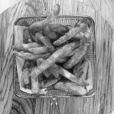

1. French fries

Recipe for making french fries
Ingredients:
- 4 large russet potatoes
- Vegetable oil (for frying)
- Salt, to taste
Steps:
- Start by peeling the potatoes. You can leave the skin on for a rustic look if you prefer.
- Rinse the peeled potatoes under cold water to remove any excess starch.
- Pat the potatoes dry with a clean kitchen towel.
- Slice the potatoes into even-sized matchsticks or strips. You can use a knife or a mandoline slicer for this. Aim for a thickness of about 1/4 to 1/2 inch (0.6 to 1.3 cm).
- Place the potato strips in a large bowl of cold water. This helps remove excess starch, which can make the fries less crispy.
- In a large, heavy-bottomed pot or a deep fryer, add enough vegetable oil to submerge the fries. Heat the oil to around 350-375°F (175-190°C).
- Remove the potato strips from the water and pat them thoroughly dry with paper towels. Moisture can cause the hot oil to splatter.
- Carefully add a handful of potato strips to the hot oil, ensuring they are not overcrowded. Fry in batches if necessary.
- Fry the potatoes for about 3-4 minutes, or until they are golden brown and crispy.
- Use a slotted spoon or a wire mesh strainer to remove the fries from the oil and place them on a plate lined with paper towels to drain excess oil.
- Use a slotted spoon or a wire mesh strainer to remove the fries from the oil and place them on a plate lined with paper towels to drain excess oil.
- Once all the fries are fried and salted, transfer them to a serving platter.
- You can serve them as-is or with your choice of condiments, such as ketchup, mayonnaise, or vinegar.